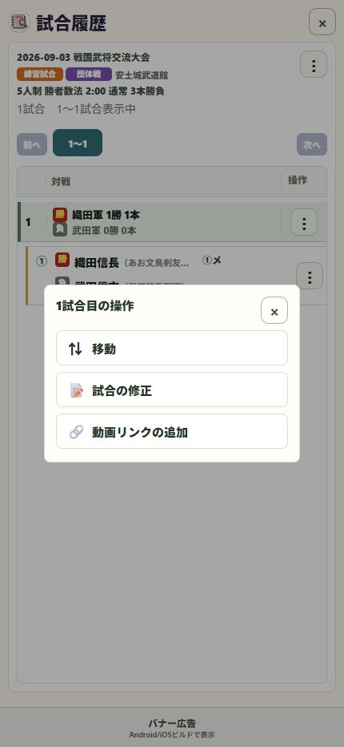

15 / 整理する
保存した試合を後から修正する
対戦者、チーム、一本の入力に気付いた間違いは、履歴から見直せます。
操作の入口ホーム → 履歴 → 大会・対戦 → 試合の修正
対象の大会を探す
日付・大会・所属などで絞り込み、修正したい対戦を開きます。
試合の修正を選ぶ
対象の対戦の操作メニューから「試合の修正」を選びます。通常の記録画面で修正します。
間違えた項目を直す
対戦者や決め手を確認して修正します。団体のオーダーを直す場合は「対戦チームの修正」を使います。
保存し、表を確認する
修正後の結果を保存します。履歴・結果表・統計の表示を確認し、共有済みの画像に訂正があれば送り直します。

